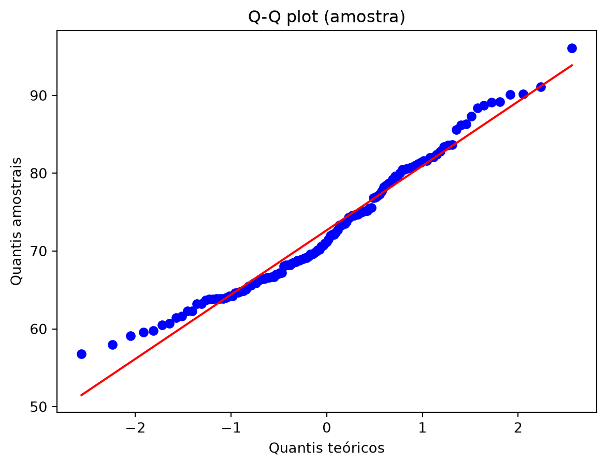
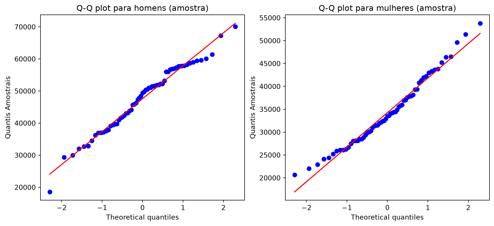

Estimação pontual, intervalos de confiança e testes de hipóteses têm o mesmo objetivo: extrair informação de um conjunto de dados observado.
Estimação pontual: fornece um único valor para descrever o parâmetro (por exemplo, a média).
Intervalo de confiança: fornece um intervalo de valores plausíveis para o parâmetro desconhecido.
Teste de hipóteses: avalia quão compatíveis os dados são com uma determinada hipótese.
Os testes de hipóteses permitem que avaliemos estatisticamente afirmações sobre parâmetros populacionais. Por exemplo, se uma empresa farmacêutica deseja afirmar que um novo medicamento reduz o risco de câncer, ela pode realizar um teste de hipóteses. Da mesma forma, se uma empresa quiser argumentar que seu programa preparatório acadêmico resulta em notas mais altas no ENEM, poderá utilizar essa mesma metodologia.
Muitas decisões importantes em áreas como negócios, medicina, educação e políticas públicas dependem dos resultados de testes de hipóteses. Nas próximas seções, veremos como esses testes podem ser conduzidos de maneira adequada e como interpretar corretamente seus resultados.
6.2 Teste de Hipóteses (Ideia)
Suponha que exista um mágico chamado Jardel, que faz a seguinte afirmação:
Mágico Jardel: Tenho aqui uma moeda honesta.
Uma pessoa da plateia, uma Cientista de Dados cética chamada Nikelly, inicia a seguinte conversa:
Cientista de Dados Cética Nikelly: Eu não acredito em você. Podemos examinar a moeda?
Mágico Jardel: Claro, fique à vontade.
Cientista de Dados Cética Nikelly: Vou lançar sua moeda 100 vezes e verificar quantas caras obtenho.
Após realizar os 100 lançamentos, Nikelly observa 99 caras.
Cientista de Dados Cética Nikelly: Você não pode estar dizendo a verdade! Não há como essa moeda ser honesta!
Mágico Jardel: Espere! Eu apenas tive azar. Juro que não estou mentindo!
Vamos dar a Jardel o benefício da dúvida e calcular a probabilidade de observarmos um resultado pelo menos tão extremo quanto esse, supondo que ele esteja dizendo a verdade.
Se Jardel não estiver mentindo, então a moeda é honesta. Nesse caso, o número de caras observadas segue uma distribuição Binomial:
\[X \sim \text{Bin}(100,0.5),\]
pois realizamos 100 lançamentos independentes e a probabilidade de cara em cada lançamento é igual a 0,5.
Queremos calcular a probabilidade de observarmos pelo menos 99 caras, já que estamos interessados em resultados tão extremos quanto o observado. Assim,
\[P(X \geq 99)= P(X=99) + P(X=100).\]
Utilizando a função de probabilidade da distribuição Binomial, obtemos
Esse valor é praticamente zero. Em outras palavras, se a moeda fosse realmente honesta, a probabilidade de observarmos 99 ou mais caras em 100 lançamentos seria praticamente nula.
Portanto, os dados fornecem evidências estatísticas extremamente fortes de que a moeda não é honesta. Nossa hipótese inicial era que a moeda fosse justa, mas, sob essa hipótese, o resultado observado seria extraordinariamente improvável. Consequentemente, há fortes razões para acreditar que nossa suposição inicial está incorreta.
Essa lógica é muito semelhante a uma prova por contradição probabilística:
Assumimos que uma afirmação é verdadeira;
Calculamos a probabilidade do resultado observado sob essa suposição;
Se essa probabilidade for extremamente pequena, passamos a duvidar da suposição inicial;
Concluímos que os dados fornecem evidências contra a hipótese assumida.
Essa é precisamente a ideia fundamental por trás dos testes de hipóteses estatísticos.
6.3 Exemplo
Existe um procedimento formal para a realização de um teste de hipóteses, que será ilustrado por meio de um exemplo. Há diversos tipos de testes de hipóteses, cada um apropriado para situações específicas, mas discutiremos essas variações mais adiante. Como veremos, o Teorema Central do Limite (TCL) desempenha um papel fundamental em muitos dos testes mais utilizados na prática.
6.3.1 Passo 1: Formular uma afirmação
O primeiro passo consiste em identificar a afirmação que se deseja investigar.
Alguns exemplos seriam:
“A comida servida nos aviões é boa.”
“Abacaxi combina com pizza.”
“Um determinado programa educacional melhora o desempenho dos estudantes.”
Em nosso exemplo, consideraremos a empresa SuperENEM Preparação, que afirma que seu programa de preparação melhora o desempenho dos estudantes no ENEM.
Suponha que, em 2025, a pontuação média nacional no ENEM fosse 662 pontos (em uma escala de 0 a 1000), com desvio-padrão igual a 131 pontos.
6.3.2 Passo 2: Definir as hipóteses
Seja \(\mu\) a verdadeira média das pontuações obtidas pelos alunos que participaram do curso SuperENEM Preparação. A hipótese nula representa a situação de referência, isto é, a ausência de efeito:
\[H_0:\mu=662.\] Em outras palavras, assumimos inicialmente que os participantes do cursinho apresentam a mesma média observada na população geral. A hipótese alternativa representa aquilo que desejamos demonstrar. Como a empresa afirma que o programa melhora o desempenho dos estudantes, definimos
\[H_A: \mu > 662.\] Essa hipótese afirma que os participantes do programa possuem uma média superior à média nacional. A hipótese alternativa apresentada acima é denominada unilateral à direita, pois procura evidências de que a média seja maior que 662. Outras possibilidades incluem:
Hipótese unilateral à esquerda:
\[H_A:\mu<662,\] caso desejássemos investigar se o programa prejudica os estudantes.
Hipótese bilateral:
\[H_A:\mu\neq 662,\]
caso estivéssemos interessados em verificar apenas se o programa produz alguma diferença, seja positiva ou negativa.
6.3.3 Passo 3: Escolher o nível de significância
Escolhemos um nível de significância \(\alpha\), que representa a probabilidade máxima de rejeitarmos incorretamente a hipótese nula. Os valores mais utilizados são 0,05 ou 0,01. Em nosso exemplo, adotaremos \(\alpha = 0{,}05\).
6.3.4 Passo 4: Coletar os dados
Suponha que observemos as pontuações de 100 estudantes participantes do programa, \(X_1,\ldots,X_{100}\). Após a coleta dos dados, verificamos que a média amostral foi \(\bar{x}=696\) pontos.
6.3.5 Passo 5: Calcular o nível descritivo (\(p\)-valor)
O \(p\)-valor é definido como a probabilidade de observarmos um resultado tão extremo quanto o obtido, ou ainda mais extremo, supondo que a hipótese nula seja verdadeira. Como estamos assumindo temporariamente que \(H_0:\mu=662\), o Teorema Central do Limite implica que a distribuição da média amostral é aproximadamente normal:
Desejamos calcular a probabilidade de observar uma média amostral pelo menos tão grande quanto a observada, \(\bar{x}=696\). Padronizando a variável, obtemos
Consultando a tabela da distribuição Normal padrão, obtemos aproximadamente
\[p_{\text{valor}} = P(Z\geq 2{,}60) \approx 0{,}0047.\] Assim, a probabilidade de observarmos uma média tão elevada quanto a obtida, caso o curso não tivesse qualquer efeito, é de apenas cerca de 0,47%.
6.3.6 Passo 6: Apresentar a conclusão
Após calcular o \(p\)-valor, devemos compará-lo com o nível de significância previamente escolhido, \(\alpha\). As regras de decisão são as seguintes:
Se (\(p_{\text{valor}} < \alpha\)), rejeitamos a hipótese nula (\(H_0\)) em favor da hipótese alternativa (\(H_A\)).
A justificativa é que, supondo que a hipótese nula seja verdadeira, a probabilidade de observarmos um resultado tão extremo quanto o obtido (ou ainda mais extremo) é igual ao \(p\)-valor. Se essa probabilidade for menor do que o nível de significância estabelecido, consideramos que os dados observados são incompatíveis com a hipótese nula.
Se (\(p_{\text{valor}} \geq \alpha\)), não rejeitamos a hipótese nula (\(H_0\)).
Como \(p_{\text{valor}} = 0{,}0047 \quad\text{e}\quad \alpha = 0{,}05,\) temos \(0{,}0047 < 0.05\). Portanto, rejeitamos a hipótese nula ao nível de significância de 5%. Podemos concluir que existem evidências estatísticas significativas para sugerir que o curso SuperENEM Preparação ajuda os estudantes a obter melhores resultados no ENEM.
Em testes de hipóteses, nunca dizemos que aceitamos a hipótese nula. A única conclusão possível é: rejeitar (\(H_0\)); ou não rejeitar (\(H_0\)).
A razão para isso pode ser compreendida retomando o exemplo da moeda. Suponha que, em vez de observarmos 99 caras em 100 lançamentos, tivéssemos observado apenas 55 caras. Esse resultado não seria particularmente improvável para uma moeda honesta. Portanto, não teríamos motivos para acusar o mágico de estar mentindo. Entretanto, isso não significa que tenhamos provado que a probabilidade de cara seja exatamente
\[p=0{,}5.\]
A verdadeira probabilidade poderia ser, por exemplo,
\[p=0{,}54
\quad\text{ou}\quad
p=0{,}58.\]
Os dados simplesmente não forneceram evidências suficientemente fortes para rejeitar a hipótese de que a moeda é justa. Em resumo, a ausência de evidências contra uma hipótese não constitui evidência de que ela seja verdadeira. Por essa razão, em Estatística, preferimos dizer que não rejeitamos a hipótese nula em vez de afirmar que a aceitamos.
6.3.7 Passo 7: Interpretação
Os dados fornecem evidências estatisticamente significativas de que os estudantes participantes do curso SuperENEM Preparação apresentam, em média, pontuações superiores à média nacional de 662 pontos.
Em outras palavras, os resultados observados são incompatíveis com a hipótese de que o programa não produz qualquer efeito, sugerindo que ele pode contribuir para melhorar o desempenho dos estudantes no ENEM.
6.4 Teste de Hipóteses (Procedimento)
O procedimento formal para a realização de um teste de hipóteses pode ser resumido nas seguintes etapas:
1. Formular uma afirmação
O primeiro passo consiste em identificar a afirmação ou hipótese que se deseja investigar. Exemplos:
“A comida servida em aviões é boa.”
“Abacaxi combina com pizza.”
“Um novo medicamento reduz o risco de uma determinada doença.”
“Um programa educacional melhora o desempenho dos estudantes.”
2. Definir as hipóteses
Devemos estabelecer uma hipótese nula, denotada por (\(H_0\)), e uma hipótese alternativa, denotada por (\(H_A\)).
A hipótese alternativa pode ser unilateral ou bilateral. Exemplos:
Unilateral à direita:
\[H_A:\theta>\theta_0\]
Unilateral à esquerda:
\[H_A:\theta<\theta_0\]
Bilateral:
\[H_A:\theta\neq\theta_0\]
A hipótese nula
A hipótese nula geralmente representa uma situação de referência, ausência de efeito ou o chamado benefício da dúvida. Em muitos problemas, ela expressa a ideia de que não existe diferença ou efeito relevante.
A hipótese alternativa
A hipótese alternativa corresponde à afirmação para a qual buscamos evidências nos dados. Em geral, ela representa a negação da hipótese nula.
3. Escolher o nível de significância
Seleciona-se um nível de significância (\(\alpha\)), que representa a probabilidade máxima tolerada de cometer um erro do tipo I. Os valores mais utilizados são \(\alpha=0.05 \quad\text{ou}\quad \alpha=0.01.\)
4. Coletar os dados
Obtém-se uma amostra da população de interesse e calcula-se a estatística necessária para o teste.
5. Calcular o nível descritivo
O \(p_{\text{valor}}\) é definido como
\[p_{\text{valor}} = P(\text{observar um resultado tão extremo quanto o obtido, ou mais extremo, supondo } H_0 \text{ verdadeira}).\]
Em outras palavras, o \(p_{\text{valor}}\) mede quão compatíveis os dados observados são com a hipótese nula.
6. Apresentar a conclusão
A decisão é tomada comparando o \(p_{\text{valor}}\) com o nível de significância (\(\alpha\)).
Se (\(p_{\text{valor}} < \alpha\)): Rejeitamos a hipótese nula (\(H_0\)) em favor da hipótese alternativa (\(H_A\)). Nesse caso, dizemos que o resultado é estatisticamente significativo ao nível de significância adotado.
Se (\(p_{\text{valor}} \geq \alpha\)): Não rejeitamos a hipótese nula (\(H_0\)). Nesse caso, concluímos que os dados não fornecem evidências suficientes para apoiar a hipótese alternativa.
6.5 Possíveis Resultados de um Teste de Hipóteses
Em um teste de hipóteses, considera-se que existem apenas duas hipóteses possíveis:
Hipótese nula (\(H_0\)): representa a hipótese inicialmente assumida como verdadeira.
Hipótese alternativa (\(H_A\)): representa a hipótese que será aceita caso existam evidências suficientes para rejeitar \(H_0\).
Por convenção, as decisões em um teste de hipóteses são sempre expressas em relação à hipótese nula. Assim, existem apenas duas decisões possíveis:
Não rejeitar \(H_0\) (ou aceitar \(H_0\), na terminologia clássica);
Rejeitar \(H_0\).
Como o verdadeiro estado da natureza é desconhecido, quatro situações podem ocorrer:
Não rejeitar \(H_0\) quando \(H_0\) é verdadeira.
Não rejeitar \(H_0\) quando \(H_A\) é verdadeira.
Rejeitar \(H_0\) quando \(H_0\) é verdadeira.
Rejeitar \(H_0\) quando \(H_A\) é verdadeira.
A Tabela abaixo resume essas quatro possibilidades.
Decisão
\(H_0\) é verdadeira
\(H_A\) é verdadeira
Não rejeitar \(H_0\)
Decisão correta
Erro do Tipo II
Rejeitar \(H_0\)
Erro do Tipo I
Decisão correta
NoteObservação
Na prática, é mais apropriado utilizar a expressão “não rejeitar \(H_0\)” em vez de “aceitar \(H_0\)”. Isso ocorre porque a ausência de evidências para rejeitar a hipótese nula não significa que ela seja verdadeira, mas apenas que os dados observados não fornecem evidências suficientes para rejeitá-la.
6.6 Erro do Tipo II
A probabilidade de cometer um erro do Tipo II é representada pela letra grega \(\beta\). O erro do Tipo II ocorre quando não se rejeita a hipótese nula (\(H_0\)), embora ela seja falsa. Em outras palavras, esse erro acontece quando a hipótese alternativa (\(H_A\)) é verdadeira, mas o teste não apresenta evidências suficientes para rejeitar \(H_0\).
O valor de \(\beta\) depende de diversos fatores, como:
o tamanho da amostra;
a variabilidade dos dados;
o nível de significância (\(\alpha\));
a magnitude da diferença entre o parâmetro populacional e o valor especificado em \(H_0\).
Quanto menor for o valor de \(\beta\), menor será a probabilidade de não detectar uma diferença que realmente existe.
NotePoder do teste
O complemento da probabilidade de cometer um erro do Tipo II é denominado poder do teste e é dado por:
\[
\text{Poder} = 1 - \beta.
\]
O poder representa a probabilidade de o teste rejeitar corretamente a hipótese nula quando ela é falsa. Em geral, busca-se desenvolver testes com alto poder, pois eles apresentam maior capacidade de detectar diferenças ou efeitos reais.
6.7 Teste de hipótese para média populacional com variância conhecida
Considere uma população normal com desvio padrão populacional \(\sigma\) conhecido. O teste de hipótese para a média é baseado na estatística:
\[
z = \frac{\bar{x} - \mu_0}{\sigma / \sqrt{n}},
\]
em que:
\(\bar{x}\) é a média amostral;
\(\mu_0\) é o valor hipotetizado para a média;
\(\sigma\) é o desvio padrão populacional conhecido;
em uma população normal com variância conhecida \(\sigma^2\). O tamanho amostral necessário para realizar um teste unilateral com nível de significância \(\alpha\) e poder \(1 - \beta\) é dado por:
\[
n = \left[\frac{(z_{1-\alpha} + z_{1-\beta}) \sigma}{\mu_0 - \mu_1} \right]^2,
\] em que:
\(\mu_0\): valor sob a hipótese nula.
\(\mu_1\): valor verdadeiro assumido sob a hipótese alternativa.
\(\sigma\): desvio padrão populacional conhecido.
\(z_{1-\alpha}\): quantil da normal padrão associado ao nível de significância.
\(z_{1-\beta}\): quantil associado ao poder do teste.
6.7.4.1 Exemplo: Cálculo do Tamanho Amostral (Teste Unilateral para a Média)
Considere o seguinte problema:
\(\mu_0 = 120\)
\(\mu_1 = 115\)
\(\sigma = 24\)
\(\alpha = 0{,}05\)
Poder do teste: \(1 - \beta = 0{,}80\)
Deseja-se determinar o tamanho amostral necessário para um teste unilateral da média. Os valores críticos são:
O tamanho da amostra é sempre arredondado para cima, para garantir que se atinja pelo menos o nível de poder desejado (neste caso, 80%). Assim, é necessário um tamanho amostral de 143 para que o teste unilateral tenha 80% de probabilidade de detectar uma diferença de pelo menos 5 unidades entre a média populacional e a média especificada na hipótese nula (\(\mu_0 = 110\)), ao nível de significância de 5%.
6.7.5 Estimativa do Tamanho Amostral para Teste da Média (Alternativa Bicaudal)
Suponha que desejamos testar:
\[
H_0: \mu = \mu_0 \quad \text{vs.} \quad H_A: \mu = \mu_1,
\] onde os dados são provenientes de uma distribuição normal com média \(\mu\) e variância conhecida \(\sigma^2\). O tamanho amostral necessário para realizar um teste bicaudal com nível de significância \(\alpha\) e poder \(1-\beta\) é dada por:
Note que o tamanho da amostra para um teste bicaudal é sempre maior do que o tamanho correspondente para um teste unilateral. Isso ocorre porque o quantil \(z_{1-\frac{\alpha}{2}}\) é maior do que \(z_{1-\alpha}\), o que exige uma amostra maior para alcançar o mesmo nível de poder do teste.
6.7.6 Exemplo Aplicado
Nesta seção, com o conjunto de dados dos estudantes disponível em SOGA-Py. Você pode carregá-lo diretamente como um recurso da web. Vamos importar o conjunto de dados para o Python como um objeto DataFrame do pandas utilizando o método read_csv:
import pandas as pdimport numpy as npestudantes = pd.read_csv("https://userpage.fu-berlin.de/soga/data/raw-data/students.csv")estudantes.head()
stud.id
name
gender
age
height
weight
religion
nc.score
semester
major
minor
score1
score2
online.tutorial
graduated
salary
1
833917
Gonzales, Christina
Female
19
160
64.8
Muslim
1.91
1st
Political Science
Social Sciences
NaN
NaN
0
0
NaN
2
898539
Lozano, T'Hani
Female
19
172
73.0
Other
1.56
2nd
Social Sciences
Mathematics and Statistics
NaN
NaN
0
0
NaN
3
379678
Williams, Hanh
Female
22
168
70.6
Protestant
1.24
3rd
Social Sciences
Mathematics and Statistics
45.0
46.0
0
0
NaN
4
807564
Nem, Denzel
Male
19
183
79.7
Other
1.37
2nd
Environmental Sciences
Mathematics and Statistics
NaN
NaN
0
0
NaN
5
383291
Powell, Heather
Female
21
175
71.4
Catholic
1.46
1st
Environmental Sciences
Mathematics and Statistics
NaN
NaN
0
0
NaN
O conjunto de dados estudantes consiste em 8.239 linhas, cada uma representando um estudante específico, e 16 colunas, cada uma correspondendo a uma variável/característica relacionada a esse estudante. Neste estudo, considera-se o conjunto completo de estudantes disponível na base de dados como a população de interesse. Além disso, a variável de interesse é o peso (massa corporal).
Aqui iremos considerar a variância conhecida, ou seja, iremos calcular diretamente a partir dos dados completos.
6.7.7 Variância e desvio-padrão populacionais
Como a base contém todos os 8.239 estudantes considerados neste estudo, a variância calculada corresponde à variância populacional.
N =len(estudantes)sigma2 = estudantes["weight"].var(ddof=0) # variância populacional sigma = estudantes["weight"].std(ddof=0) # desvio-padrão populacional print(f"Tamanho da população: {N}") print(f"Variância populacional: {sigma2:.2f}") print(f"Desvio-padrão populacional: {sigma:.2f} kg")
Tamanho da população: 8239
Variância populacional: 74.56
Desvio-padrão populacional: 8.63 kg
6.7.8 Objetivo
Avaliar se a massa corporal média dos estudantes difere da massa corporal média da população adulta europeia, reportada por Walpole et al. (2012) como 70,8 kg. As hipóteses são:
\[H_0: \mu = 70,8\]
e
\[H_A: \mu \neq 70,8\] em que \(\mu\) representa a massa corporal média dos estudantes.
6.7.9 Cálculo do tamanho mínimo de amostra
Foi adotada uma diferença mínima detectável de 2 kg em relação à média de referência de 70,8 kg. O tamanho amostral foi calculado para garantir poder estatístico de 80% e nível de significância de 5%, ou seja,
Como o \(p\)-valor calculado (0,004493) é consideravelmente inferior ao nível de significância adotado (0,05), a decisão estatística é rejeitar a hipótese nula, ou seja, de que a massa corporal média dos estudantes é igual a massa corporal média da população adulta europeia. Sendo assim, existe evidência estatisticamente significativa de que a média populacional é diferente do valor inicialmente suposto.
6.8 Teste de hipótese para média populacional com variância desconhecida
Agora iremos considerar a situação mais realista que é quando a variância populacional é desconhecida. Para calcular o tamanho mínimo de amostra iremos precisar estimar a variância populacional. Para isto, iremos usar uma amostra piloto.
Tamanho da amostra piloto: 50
Variância amostral: 67.82
Desvio-padrão amostral: 8.24 kg
stud.id
name
gender
age
height
weight
religion
nc.score
semester
major
minor
score1
score2
online.tutorial
graduated
salary
3165
802420
Stravia, Kelly
Female
23
158
67.2
Catholic
3.85
1st
Political Science
Environmental Sciences
NaN
NaN
0
0
NaN
7715
307406
Ha, Edmond
Male
21
185
80.5
Catholic
2.21
5th
Social Sciences
Economics and Finance
55.0
46.0
0
1
30038.217858
614
786879
Benson, Joseph
Male
22
174
75.2
Catholic
1.05
5th
Environmental Sciences
Mathematics and Statistics
74.0
70.0
0
1
39145.213015
1458
807680
Johnson, Xin
Male
24
187
83.4
Orthodox
1.64
3rd
Mathematics and Statistics
Environmental Sciences
84.0
90.0
0
0
NaN
4657
142413
Ward, Sendy
Female
23
155
61.6
Muslim
2.07
1st
Social Sciences
Mathematics and Statistics
NaN
NaN
0
0
NaN
6.8.2 Cálculo do tamanho mínimo de amostra
from scipy.stats import talpha =0.05power =0.80delta =2.0z_alpha = norm.ppf(1- alpha/2) z_beta = norm.ppf(power) n0 = ((z_alpha + z_beta) * s/delta)**2print(f"Tamanho inicial da amostra (usando quantil da normal padrão): {np.ceil(n0):.0f}")t_alpha = t.ppf(1- alpha/2, df = n0-1)t_beta = t.ppf(power, df = n0-1)n1 = ((t_alpha + t_beta) * s/delta)**2print(f"Tamanho inicial da amostra (usando quantil da t-student): {np.ceil(n1):.0f}")
Tamanho inicial da amostra (usando quantil da normal padrão): 134
Tamanho inicial da amostra (usando quantil da t-student): 136
Como a população possui apenas 8.239 indivíduos, aplicaremos uma correção para população finita:
n = (n1 * N)/(n1 + N -1) n =int(np.ceil(n)) print(f"Tamanho corrigido da amostra: {n}")
Tamanho corrigido da amostra: 133
6.8.3 Seleção da amostra aleatória
Iremos considerar os estudantes coletados na amostra piloto na amostra final considerada para o estudo. Assim, iremos selecionar mais 81 estudantes. Como a semente aleatória é a mesma da amostra piloto, basta selecionar normalmente os 131 estudantes.
Agora, vamos testar a suposição de normalidade plotando um gráfico de probabilidade normal, frequentemente chamado de QQ plot. Se a variável tiver distribuição normal, o gráfico de probabilidade normal deverá ser aproximadamente linear.
import matplotlib.pyplot as pltimport scipy.stats as statsfig, ax = plt.subplots()stats.probplot(amostra["weight"], dist="norm", plot=ax)ax.set_title("Q-Q plot (amostra)")ax.set_ylabel("Quantis amostrais")ax.set_xlabel("Quantis teóricos")plt.show()

Observamos que os dados da amostra apresentam algum ruído, os desvios da linha reta na parte inferior sugerem que a distribuição dos dados é ligeiramente assimétrica, como pode ser visto no histograma abaixo.
plt.hist(amostra["weight"], bins=20)plt.title("Histograma da variável weight")plt.xlabel("Weight")plt.ylabel("Frequência")plt.show()
Podemos usar algum teste de hipótese para teste a normalidade dos dados. As hipóteses do teste são:
Hipótese Nula: Os dados vem de uma distribuição normal.
Hipótese Alternativa: Os dados observados não vêm da distribuição normal.
from statsmodels.stats.diagnostic import lillieforslilliefors(amostra["weight"], dist='norm')
from scipy.stats import andersonanderson(amostra["weight"], dist='norm')
/tmp/ipykernel_5868/1331499744.py:3: FutureWarning: As of SciPy 1.17, users must choose a p-value calculation method by providing the `method` parameter. `method='interpolate'` interpolates the p-value from pre-calculated tables; `method` may also be an instance of `MonteCarloMethod` to approximate the p-value via Monte Carlo simulation. When `method` is specified, the result object will include a `pvalue` attribute and not attributes `critical_value`, `significance_level`, or `fit_result`. Beginning in 1.19.0, these other attributes will no longer be available, and a p-value will always be computed according to one of the available `method` options.
anderson(amostra["weight"], dist='norm')
AndersonResult(statistic=np.float64(1.25076662006623), critical_values=array([0.558, 0.627, 0.748, 0.868, 1.029]), significance_level=array([15. , 10. , 5. , 2.5, 1. ]), fit_result= params: FitParams(loc=np.float64(72.6751879699248), scale=np.float64(8.280923733561751))
success: True
message: '`anderson` successfully fit the distribution to the data.')
from scipy.stats import jarque_berajarque_bera(amostra["weight"])
Se considerarmos um nível de significância de 1%, temos que a maioria dos testes não rejeita a hipótese de que os dados são provenientes de uma população normal. No entanto, ao considerarmos um nível de 5% temos que o resultado se inverte.
6.8.5 Teste t para uma média com variância desconhecida
Segundo a Deutsche Bischofskonferenz (Conferência Episcopal Alemã, DBK), aproximadamente 24% da população alemã se declara católica. Neste estudo, pretende-se investigar se a proporção de estudantes católicos difere da proporção observada na população geral da Alemanha.
Para isso, será obtida uma amostra aleatória de estudantes, a partir da qual será realizada uma inferência estatística sobre a proporção populacional. Em particular, o objetivo é testar a hipótese de igualdade entre a proporção de católicos no grupo de estudantes e o valor de referência de 0,24. Iremos considerar a seguintes hipótese:
\[H_0: p = 0,24\]
e
\[H_A: p \neq 0,24\] em que \(p\) representa a proporção dos estudantes que são católicos.
6.9.1 Cálculo do tamanho mínimo de amostra
Desejamos ter 80% de poder para detectar diferenças de pelo menos 2 pontos percentuais em relação ao valor de referência. Além disso, o valor de \(p=0.5\) maximiza a variância \(p(1-p)\) e, portanto, produz o maior tamanho amostral possível.
Ao nível de significância de 5%, os dados fornecem evidências suficientes para concluir que a proporção de estudantes católicos difere da proporção de 24% observada na população alemã segundo a DBK. O resultado sugere que a composição religiosa da população estudantil não reflete exatamente a composição religiosa da população geral.
6.10 Testes de Hipóteses para médias de duas populações
Até agora, temos nos concentrado em testes de hipóteses para a média de uma única população. No entanto, em muitas aplicações, desejamos comparar as médias de duas ou mais populações. Para isso, primeiro precisamos distinguir entre amostras provenientes de duas populações independentes e amostras provenientes de populações que não são independentes, chamadas de amostras pareadas. Nas seções seguintes, discutiremos procedimentos inferenciais para comparar as médias de duas populações.
Para amostras independentes de tamanhos \(n_1\) e \(n_2\), provenientes das populações 1 e 2, a média de todas as possíveis diferenças entre as duas médias amostrais é igual à diferença entre as duas médias populacionais:
\[\mu_{\bar{x}_1-\bar{x}_2} = \mu_1 - \mu_2.\]
Além disso, o desvio-padrão de todas as possíveis diferenças entre as duas médias amostrais é igual à raiz quadrada da soma das variâncias populacionais, cada uma dividida pelo respectivo tamanho da amostra:
\[\sigma_{\bar{x}_1-\bar{x}_2} = \sqrt{\frac{\sigma_1^2}{n_1} + \frac{\sigma_2^2}{n_2}}.\] Uma variável normalmente distribuída ou um tamanho de amostra suficientemente grande (lembre-se do Teorema Central do Limite) faz com que a diferença entre as médias amostrais (\(\bar{x}_1-\bar{x}_2\)) também tenha distribuição normal.
Os procedimentos de teste de hipóteses para duas médias populacionais são, na verdade, os mesmos utilizados para uma única média populacional.O procedimento passo a passo para testes de hipóteses é resumido da seguinte forma:
Formular a hipótese nula (\(H_0\)) e a hipótese alternativa (\(H_A\)).
Definir o nível de significância (\(\alpha\)).
Calcular o valor da estatística de teste.
Determinar o \(p\)-valor.
Se \(p \leq \alpha\), rejeitar \(H_0\); caso contrário, não rejeitar \(H_0\).
Interpretar o resultado do teste de hipóteses.
6.10.1 Inferências para Duas Médias Populacionais, Utilizando Amostras Independentes e Assumindo Desvios-Padrão Iguais
Nesta seção, realizamos um teste de hipóteses para as médias de duas populações. Assumimos que os desvios-padrão das duas populações são iguais, porém desconhecidos.
Se conhecêssemos o desvio-padrão populacional comum \(\sigma\) e e a diferença entre as médias amostrais \(\bar{x}_1 - \bar{x}_2\), a estatística de teste seria dada por:
\[z = \frac{(\bar{x}_1 - \bar{x}_2) - (\mu_1 - \mu_2) }{\sigma \sqrt{\frac{1}{n_1}+ \frac{1}{n_2}}}.\] No entanto, em quase todas as aplicações práticas, o valor de \(\sigma\) é desconhecido. Assim, precisamos estimá-lo.
A melhor maneira de fazer isso é considerar as variâncias amostrais \(s_1^2\) e \(s_2^2\) como duas estimativas de \(\sigma^2\). Combinando (ou “agrupando”) essas variâncias e ponderando-as pelos respectivos tamanhos das amostras, obtemos a estimativa da variância populacional comum:
\[s_c = \sqrt{\frac{(n_1 -1)\cdot s_1^2 + (n_2 - 1) \cdot s_2^2}{n_1 + n_2 - 2}}.\] A quantidade \(s_c\) é denominada desvio-padrão amostral combinado em que o subscrito \(c\) significa combinado. Substituindo \(\sigma\) por \(s_c\), temos:
\[t = \frac{(\bar{x}_1 - \bar{x}_2) - (\mu_1 - \mu_2) }{s_c \sqrt{\frac{1}{n_1}+ \frac{1}{n_2}}},\] em que \(t\) segue uma distribuição t-student com \(n_1+n_2 -2\) graus de liberdade.
6.10.2 Estimação por Intervalo de \(\mu_1-\mu_2\)
O intervalo de confiança de \(100\cdot(1-\alpha)\%\) para a diferença entre as médias populacionais \((mu_1-\mu_2)\) é dada por:
em que o valor crítico \(t_{n_1+n_2-2, \frac{\alpha}{2} }\) é obtido na distribuição t-Student para o nível de confiança desejado e \(n_1+n_2-2\) graus de liberdade.
Esse intervalo fornece uma faixa de valores plausíveis para a diferença entre as médias populacionais. Se o valor zero estiver contido no intervalo, isso sugere que não há evidência suficiente para concluir que as médias das duas populações são diferentes. Por outro lado, se o intervalo não contiver zero, há evidências de uma diferença significativa entre as médias populacionais.
6.10.3 Exemplo Prático
O Python permite realizar um teste t com variâncias combinadas utilizando a função ttest_ind_from_stats(), disponível no módulo stats do pacote scipy.
No exemplo, assumiremos que as variâncias das duas amostras são iguais. Portanto, o argumento equal_var da função será definido como True.
Para praticar a aplicação do teste t com variâncias combinadas, utilizaremos o conjunto de dados estudantes.
6.10.3.1 Hipóteses
Queremos verificar se existe diferença entre os ganhos de homens e mulheres graduados. Desta forma, queremos testar as seguintes hipóteses:
\[H_0: \mu_1 = \mu_2\]
e
\[H_A: \mu_1 \neq \mu_2\] em que \(\mu_1\) e \(\mu_2\) representam as médias salariais dos estudantes graduados do sexo masculino e feminino, respectivamente.
6.10.3.2 Preparação dos dados
Começamos com a preparação dos dados, que inclui as seguintes etapas:
Subdividimos o conjunto de dados com base na variável binária graduated, que indica se o estudante já se formou. O valor 1 representa “formado”, enquanto 0 indica “não formado”.
Em seguida, dividimos o conjunto de dados por gênero (masculino e feminino).
Depois, selecionamos aleatoriamente uma amostra de 50 estudantes do sexo feminino e 50 do sexo masculino de cada subconjunto e extraímos a média do salário anual (em euros) como variável de interesse.
Armazenaremos as informações de salário dos grupos masculino e feminino em variáveis separadas chamadas amostra_homens e amostra_mulheres. A informação relevante está armazenada na coluna salary.
Razão entre as variâncias da amostra piloto: 1.34
Tamanho inicial da amostra: 62
A razão entre os desvios-padrão é aproximadamente 1,34 e, portanto, nota-se que o suposição de igualdade dos desvios-padrão populacionais parece razoável.
tol =1max_iter =100n0 = np.ceil(n0)for i inrange(max_iter): gl =2*n0 -2 t_alpha = t.ppf(1- alpha/2, df=gl) t_beta = t.ppf(power, df=gl) n_novo = (((t_alpha + t_beta)/delta)**2) * (s21_piloto + s22_piloto)# normalmente arredondamos para cima n_novo = np.ceil(n_novo)if n_novo == n0:break n0 = n_novon =int(np.ceil(n0)) print(f"Convergiu em {i+1} iterações")print(f"n por grupo = {int(n)}")
Convergiu em 2 iterações
n por grupo = 63
6.10.4 Seleção da amostra
amostra_homens = homens_graduados.sample(n, random_state =24, replace =False)["salary"] #Sorteia amostra de homens e pega salárioamostra_mulheres = mulheres_graduadas.sample(n, random_state =24, replace =False)["salary"] #Sorteia amostra de mulheres e pega salário
import matplotlib.pyplot as pltimport scipy.stats as statsplt.figure(figsize=(12,5))ax = plt.subplot(1, 2, 1)qq = stats.probplot(amostra_homens, dist="norm", plot = plt)ax.set_title("Q-Q plot para homens (amostra)")ax.set_ylabel("Quantis Amostrais")ax = plt.subplot(1, 2, 2)qq = stats.probplot(amostra_mulheres, dist="norm", plot = plt)ax.set_title("Q-Q plot para mulheres (amostra)")ax.set_ylabel("Quantis Amostrais")
Text(0, 0.5, 'Quantis Amostrais')

Observamos que os dados da amostra apresentam certo nível de ruído, mas ainda seguem aproximadamente uma distribuição normal. Além disso, verificamos se os desvios-padrão das duas populações são aproximadamente iguais. Como regra prática, a condição de igualdade dos desvios-padrão populacionais é considerada satisfeita se a razão entre o maior e o menor desvio-padrão amostral for inferior a 2.
Ao nível de significância de 1%, os dados fornecem evidências muito fortes para concluir que o salário médio dos graduados do sexo masculino é diferente do salário médio das graduadas do sexo feminino.
6.11 Inferências para duas médias populacionais com amostras independentes e variâncias desiguais
Nos casos em que desejamos testar a igualdade de duas médias populacionais e os desvios-padrão das duas populações são diferentes, aplica-se o chamado teste t de Welch.
O teste t de Welch é semelhante ao teste apresentado na seção anterior. A diferença é que agora o estimador do desvio-padrão é dado por:
\[s_{\bar{x}_1 - \bar{x}_2} = \sqrt{\frac{s_1^2}{n_1} + \frac{s_2^2}{n_2}}.\] Além disso, a estatística t segue uma distribuição t-Student, e os graus de liberdade (gl) são calculados pela fórmula de Welch-Satterthwaite:
\[gl = \frac{\left(\frac{s_1^2}{n_1}+\frac{s_2^2}{n_2}\right)^2}{\frac{\left(\frac{s_1^2}{n_1}\right)^2}{n_1-1} + \frac{\left(\frac{s_2^2}{n_2}\right)^2}{n_2-1}}.\] Ao utilizar tabelas da distribuição t, recomenda-se arredondar os graus de liberdade para baixo até o inteiro mais próximo.
O teste t de Welch é robusto a violações moderadas da suposição de normalidade das populações. Entretanto, ele é menos robusto à presença de valores extremos (outliers) (Weiss, 2010).
No exemplo, anterior poderíamos aplicar o teste de maneira prática e fácil usando a função stats.ttest_ind() com o argumento equal_var = False.
resultado_teste_Welch = stats.ttest_ind(amostra_homens, amostra_mulheres, equal_var =False, alternative ="two-sided")resultado_teste_Welch
6.12 Inferências para Duas Médias Populacionais com Amostras Dependentes (Pareadas)
Estudaremos agora a um procedimento de teste de hipóteses para a diferença entre duas médias populacionais quando as amostras são dependentes. Quando, por exemplo, dois valores são coletados da mesma fonte (ou unidade amostral), diz-se que as amostras são pareadas ou emparelhadas.
Esses procedimentos são frequentemente aplicados em análises do tipo Antes–Depois–Controle–Impacto (BACI, Before-After-Control-Impact). Imagine que você precise avaliar a eficácia de um sistema de filtragem na remoção de poluentes atmosféricos emitidos por uma fábrica. Nesse caso, uma população consiste em medições da qualidade do ar realizadas antes da implementação ou renovação do sistema de filtragem. A outra população consiste em medições da qualidade do ar realizadas após a instalação do novo sistema. Trata-se, portanto, de amostras pareadas, pois os dois conjuntos de dados são coletados da mesma fonte, isto é, a fábrica.
Em amostras pareadas, a diferença entre os valores observados nos dois conjuntos de dados é denotada por (d), frequentemente chamada de diferença pareada. Observe que o tamanho amostral (\(n\)) é o mesmo para ambas as amostras. A média das diferenças pareadas é representada por (\(\bar{d}\)):
\[\bar{d} = \frac{\sum d}{n}.\]
O desvio-padrão das diferenças pareadas, denotado por (\(s_d\)), é calculado por:
Quando a hipótese nula assume que não existe diferença entre as médias populacionais, isto é,
\[\mu_1 - \mu_2 = 0,\]
a estatística de teste simplifica-se para:
\[t =
\frac{\bar{d}}
{s_d / \sqrt{n}}.\]
A estatística (\(t\)) para amostras pareadas segue uma distribuição t de Student com \(gl = n - 1\) graus de liberdade.
6.12.1 Estimação por Intervalo para (\(\mu_d\))
O intervalo de confiança de (\(100\cdot(1-\alpha)\%\)) para a média das diferenças pareadas (\(\mu_d\)) é dado por:
\[\bar{d}
\pm
t^*
\frac{s_d}{\sqrt{n}},\]
em que (\(t^*\)) é o valor crítico obtido da distribuição t-Student para o nível de confiança desejado e (\(n-1\)) graus de liberdade.
6.12.2 Exemplo Prático
Para ilustrar a aplicação do teste t pareado para amostras dependentes, estamos interessados em verificar se um tutorial online de Estatística auxilia os estudantes a melhorar seu desempenho acadêmico.
Existem três variáveis de interesse no conjunto de dados dos estudantes:
A variável `online.tutorial é uma variável binária que assume valor 1 se o estudante concluiu o tutorial online de Estatística e 0 caso contrário.
As variáveis score1 e score2 representam as notas (de 0 a 100) obtidas em duas avaliações de Matemática e Estatística. Quanto maior a nota, melhor o desempenho do estudante.
Observe que a primeira avaliação ocorre antes da participação dos estudantes no tutorial online de Estatística. A participação no tutorial é opcional, mas as duas avaliações são obrigatórias para todos os estudantes. A primeira prova (score1) é realizada no início do terceiro semestre, enquanto a segunda prova (score2) é realizada ao final do terceiro semestre.
Neste contexto, há duas questões de pesquisa de interesse:
Verificar se o grupo de estudantes que participou do tutorial online de Estatística apresentou melhor desempenho na segunda avaliação em comparação com a primeira avaliação.
Avaliar o desempenho do grupo de estudantes que não participou do tutorial online, comparando os resultados obtidos na primeira e na segunda avaliação.
6.12.3 Hipóteses
A hipótese nula afirma que não há diferença entre as médias das notas dos dois exames:
\[
H_0: \mu_1 = \mu_2
\]
A hipótese alternativa indica que os alunos têm melhor desempenho no segundo exame:
\[
H_A: \mu_1 < \mu_2
\]
Isso caracteriza um teste de hipótese unilateral à esquerda
Ao nível de significância de 1%, os dados fornecem evidência forte para concluir que as notas dos estudantes em exames melhoram após realizarem um tutorial online de aprendizagem de estatística.